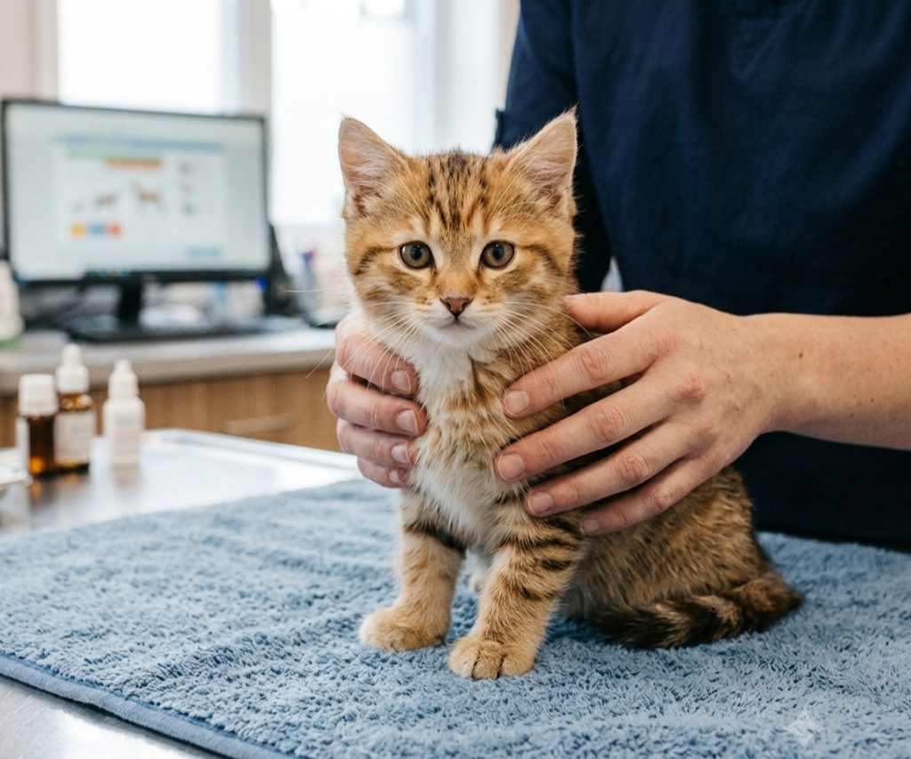
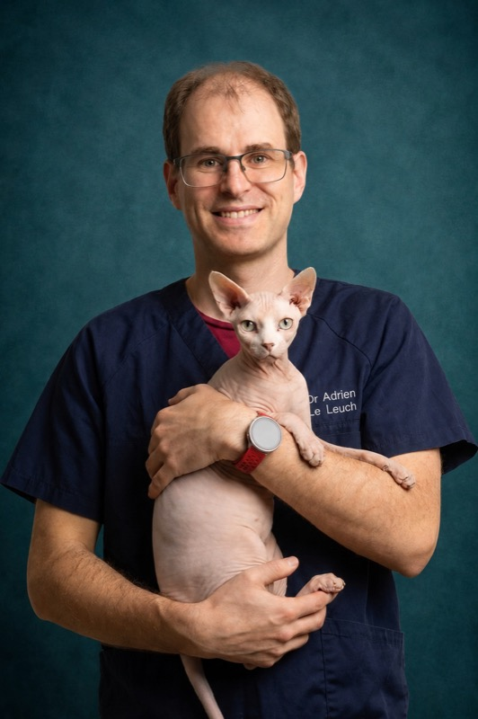
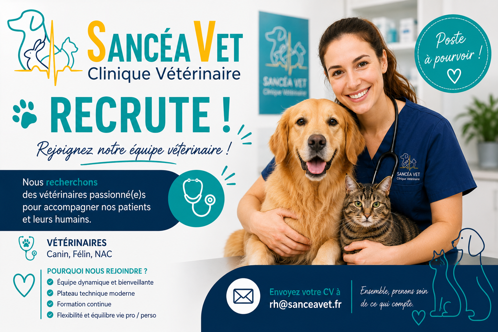

Notre clinique vétérinaire Sancéa Vet de 550 m², située à Saint-Julien-les-Villas, allie expertise médico-chirurgicale et engagement passionné pour proposer à vos animaux (chiens, chats, furets, lapins et rongeurs) les meilleurs soins possibles dans un environnement pensé pour leur confort et leur bien-être.

Une gamme complète de soins vétérinaires pour tous vos animaux de compagnie
Médecine générale et médecine interne
Cliquez pour en savoir plus →Médecine préventive selon les protocoles vaccinaux en vigueur.
Cliquez pour en savoir plus →Bloc opératoire moderne avec équipement de pointe pour des interventions en toute sécurité.
Cliquez pour en savoir plus →Soins dentaires préventifs et curatifs pour prendre en charge les problèmes bucco-dentaires courants.
Cliquez pour en savoir plus →Radiographie et échographie sur place pour un diagnostic rapide et précis.
Cliquez pour en savoir plus →En dehors des horaires d'ouverture, un service d'astreinte assure la continuité des soins. Appelez toujours avant de vous déplacer.
Cliquez pour en savoir plus →Service de référé dans plusieurs disciplines : échographie abdominale, échocardiographie, orthopédie, ophtalmologie, médecine interne, etc.
Cliquez pour accéder au formulaire →Depuis plus de 10 ans, nous mettons notre expertise au service du bien-être animal. Notre équipe de vétérinaires passionnés utilise les dernières avancées médicales tout en gardant une approche chaleureuse et personnalisée.
Nous croyons que chaque animal mérite des soins de qualité dans un environnement sans stress.
Cliquez sur un membre pour découvrir son parcours et ses domaines de compétence

Médecine interne & cardiologie
Cliquez pour en savoir plus →Médecine et chirurgie orthopédique
Cliquez pour en savoir plus →Médecine, échographie et comportement
Cliquez pour en savoir plus →Médecine et chirurgie ophtalmologique
Cliquez pour en savoir plus →Découvrez nos derniers articles, conseils santé et actualités de la clinique
Vétérinaires, rejoignez une équipe passionnée au service du bien-être animal
Sancéa Vet recherche des vétérinaires pour renforcer son équipe. Que vous soyez jeune diplômé ou expérimenté, écrivez-nous à rh@sanceavet.fr.
Nous serons ravis d'échanger avec vous et de vous rencontrer.
Envoyer ma candidature
Nous sommes à votre disposition pour prendre soin de vos compagnons. N'hésitez pas à nous contacter pour prendre rendez-vous ou pour toute question.
75 Boulevard de Dijon
10800 Saint-Julien-les-Villas
03 10 94 09 66
Urgences : 03 10 94 09 66
Lun-Ven : 8h30 - 19h
Sam : 8h30 - 12h et 13h - 16h | Dim : Astreinte
contact@sanceavet.fr